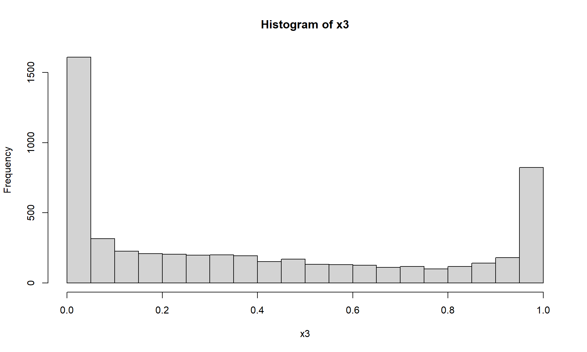
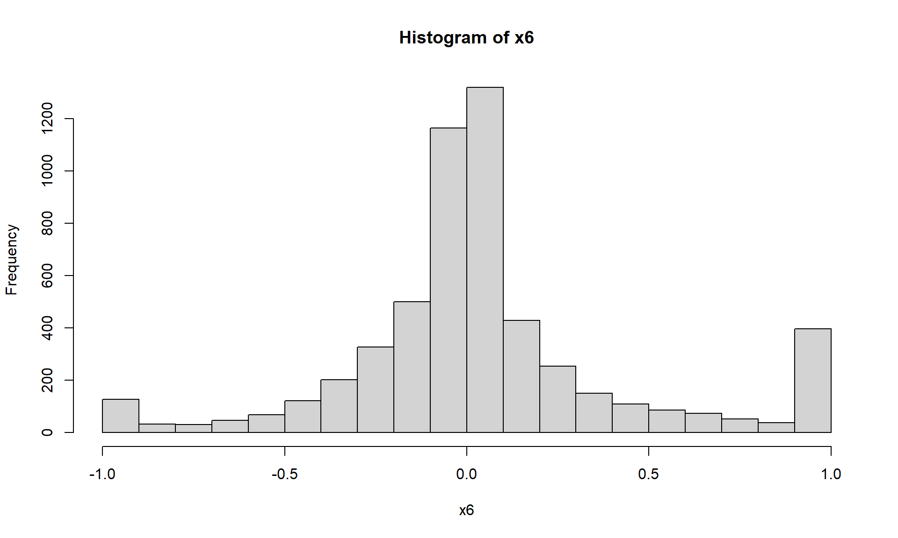
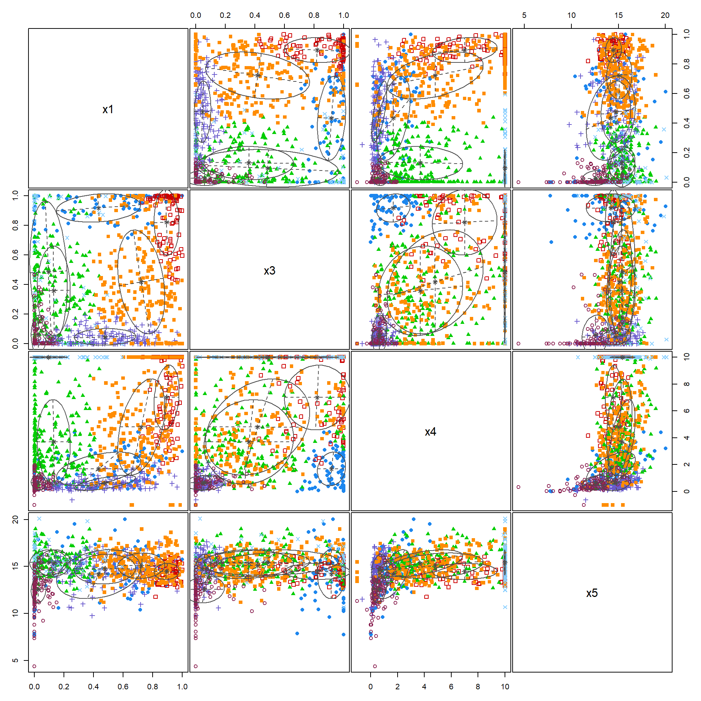
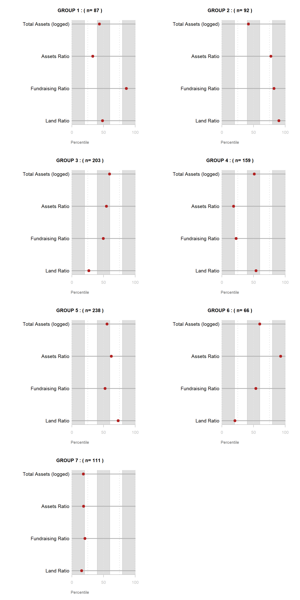
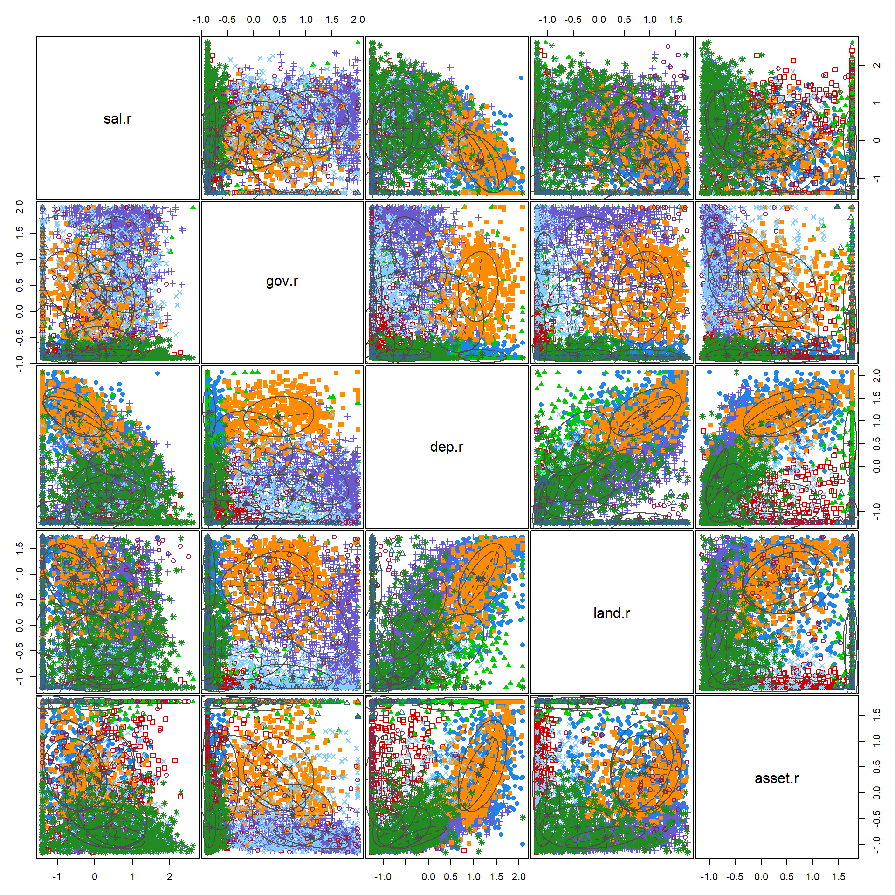
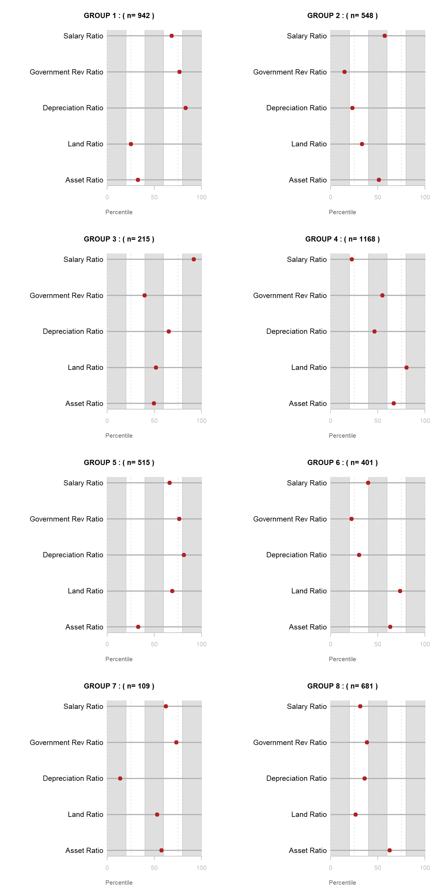
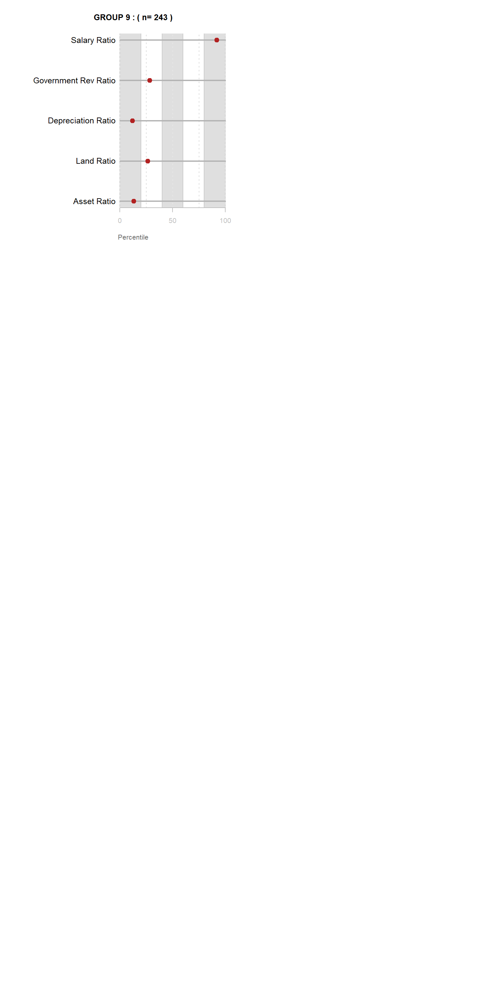

## Packages
library( tidyr ) # data wrangling
library( dplyr ) # data wrangling
library( scales ) # re-scaling numbers
library( mclust )
set.seed(1234)
# library( urbnthemes ) # setting the color scheme to Urban's
# set_urbn_defaults(style = "print")
source( "r-functions.R" )
# stargazer table print type
# run chunk for live RMD sessions
s.type <- "text"
# stargazer table print type
# resets to html when knitting
s.type <- "html"
## Load Data
# local:
core <- readRDS( "02-data-wrangled/core.rds" )
# from github:
# URL <- "https://github.com/lecy/fiscal-health/raw/main/02-data-wrangled/core.rds"
# core <- readRDS(gzcon(url( URL )))
# Preview the data:
# table( core$NTEE1 ) %>% kable()
# head(core) %>% pander()view_cluster_data <- function( model.dat, group.ids, data.dictionary )
{
num.groups <- length( unique( as.character( group.ids ) ) )
num.vars <- ncol( model.dat )
df.ntile <- sapply( model.dat, ntile, 100 )
df.ntile <- as.data.frame( df.ntile )
df.ntile$cluster <- as.factor( paste0("GROUP-", group.ids ) )
stats <-
df.ntile %>%
group_by( cluster ) %>%
summarise_each( funs(mean) )
group.size <- table(group.ids)
df.stats <- data.frame( t(stats), stringsAsFactors=F )
names(df.stats) <- paste0( "GROUP.", 1:num.groups )
df.stats <- df.stats[-1,]
for( i in 1:num.groups )
{
z <- df.stats[,i]
print({
plot( rep(1,num.vars), 1:num.vars, bty="n", xlim=c(-75,100),
type="n", xaxt="n", yaxt="n",
xlab="Percentile",
ylab="", col.lab="gray40",
main=paste( "GROUP", i, ": ( n=", group.size[i],")" ) )
rect( xleft=0, ybottom=0, xright=20, ytop=(num.vars+1), col=gray(0.75,0.5), border="gray80" )
rect( xleft=40, ybottom=0, xright=60, ytop=(num.vars+1), col=gray(0.75,0.5), border="gray80" )
rect( xleft=80, ybottom=0, xright=100, ytop=(num.vars+1), col=gray(0.75,0.5), border="gray80" )
abline( v=seq(0,100,25), lty=3, lwd=1.5, col="gray90" )
segments( y0=1:num.vars, x0=0, x1=100, col="gray70", lwd=2 )
text( -0.2, 1:num.vars, data.dictionary$LABEL, cex=1.2, pos=2 )
points( z, 1:num.vars, pch=19, col="firebrick", cex=1.5 )
axis( side=1, at=c(0,50,100), col.axis="gray", col="gray" )
}) # end print
} # end loop
}x1 <- core$lndbldgsequipend / core$totassetsend
x1[ x1 > 1 ] <- 1
x2 <- core$netincfndrsng / core$totrevenue
x3 <- core$totprgmrevnue / core$totrevenue
x3[ x3 < 0 ] <- 0
x3[ x3 > 1 ] <- 1
hist( x3, breaks=25 )
x4 <- core$totassetsend / core$totrevenue
x4[ core$totrevenue == 0 ] <- 0
x4[ x4 > 10 ] <- 10
x4[ x4 < -1 ] <- -1
x5 <- log( core$totassetsend )
x5[ core$totassetsend <= 0 ] <- 5
x6 <- ( core$totrevenue - core$totfuncexpns ) / core$totfuncexpns
x6[ core$totfuncexpns == 0 ] <- 0
x6[ x6 > 1 ] <- 1
x6[ x6 < -1 ] <- -1
hist(x6, breaks=25 )
rescale <- function(x)
{
x[ is.na(x) ] <- median(x, na.rm=T )
x.05 <- quantile( x, 0.05 )
x.95 <- quantile( x, 0.95 )
x[ x < x.05 ] <- x.05
x[ x > x.95 ] <- x.95
x <- scales::rescale( x, to=c(1,100) )
if( abs( mean(x) - median(x) ) > 5 )
{ x <- log(x) }
x <- scale(x)
return(x)
}d <- data.frame(x1,x3,x4,x5)
d2 <- sapply( d, rescale ) %>% as.data.frame()
d3 <- sample_n( d2, 1000 )
d1 <- sample_n( d, 1000 )
d1 <- na.omit(d1)
fit <- Mclust( d1 )
plot( fit, what = "classification" )
summary( fit )## ----------------------------------------------------
## Gaussian finite mixture model fitted by EM algorithm
## ----------------------------------------------------
##
## Mclust VEV (ellipsoidal, equal shape) model with 7 components:
##
## log-likelihood n df BIC ICL
## -3900.919 956 86 -8392.036 -8613.657
##
## Clustering table:
## 1 2 3 4 5 6 7
## 87 92 203 159 238 66 111cluster <- as.factor( fit$classification )group.ids <- as.character( fit$classification )
labels <- c("Land Ratio","Fundraising Ratio","Assets Ratio","Total Assets (logged)")
data.dictionary <- data.frame( VARIABLE=names(d1), LABEL=labels )
par( mfrow=c(4,2) )
view_cluster_data( model.dat=d1,
group.ids=group.ids,
data.dictionary=data.dictionary )## [1] 0 50 100## [1] 0 50 100## [1] 0 50 100## [1] 0 50 100## [1] 0 50 100## [1] 0 50 100## [1] 0 50 100
sum <- read.csv("EFILE/F9-P01-T00-SUMMARY.csv")
rev <- read.csv("EFILE/F9-P08-T00-REVENUE.csv")
exp <- read.csv("EFILE/F9-P09-T00-EXPENSES.csv")
assets <- read.csv("EFILE/F9-P10-T00-BALANCE-SHEET.csv")
d2 <- merge( rev, exp )
d3 <- merge( d2, assets )
d4 <- merge( d3, sum )
d <- dplyr::filter( d4, TAX_YEAR == 2018 )rescale <- function(x)
{
x[ is.na(x) ] <- median(x, na.rm=T )
x.05 <- quantile( x, 0.05 )
x.95 <- quantile( x, 0.95 )
x[ x < x.05 ] <- x.05
x[ x > x.95 ] <- x.95
x <- scales::rescale( x, to=c(1,100) )
if( abs( mean(x) - median(x) ) > 5 )
{ x <- log(x) }
x <- scale(x)
return(x)
}tot.rev <- d$F9_08_REV_TOT_TOT
rent <- d$F9_08_REV_OTH_RENT_NET_TOT
volunteers <- d$F9_01_ACT_GVRN_VOL_TOT
num.emp <- d$F9_01_ACT_GVRN_EMPL_TOT
grants <- d$F9_01_REV_CONTR_TOT_CY
prog.rev <- d$F9_01_REV_PROG_TOT_CY
tot.rev <- d$F9_01_REV_TOT_CY
grants.paid <- d$F9_01_EXP_GRANT_SIMILAR_CY
mem.benefits <- d$F9_01_EXP_BEN_PAID_MEMB_CY
salaries <- d$F9_01_EXP_SAL_ETC_CY
fundraise <- d$F9_01_EXP_FUNDR_TOT_CY
tot.exp <- d$F9_01_EXP_TOT_CY
depreciation <- d$F9_09_EXP_DEPREC_TOT
depreciation[ is.na(depreciation) ] <- 0
gov.grants <- d$F9_08_REV_CONTR_GOVT_GRANT
gov.grants[ is.na(gov.grants ) ] <- 0
land.bldg <- d$F9_10_ASSET_LAND_BLDG_NET_EOY
land.bldg[ is.na(land.bldg) ] <- 0
tot.assets <- d$F9_10_ASSET_TOT_EOY
land.r <- land.bldg / tot.assets
land.r[ land.r < 0 ] <- 0
land.r[ land.r > 1 ] <- 1
grant.r <- grants / tot.rev
grant.r[ grant.r < 0 ] <- 0
grant.r[ grant.r > 1 ] <- 1
prog.r <- prog.rev / tot.rev
prog.r[ prog.r < 0 ] <- 0
prog.r[ prog.r > 1 ] <- 1
sal.r <- salaries / tot.exp
sal.r[ sal.r < 0 ] <- 0
sal.r[ sal.r > 1 ] <- 1
gov.r <- gov.grants / tot.rev
gov.r[ gov.r < 0 ] <- 0
gov.r[ gov.r > 1 ] <- 1
dep.r <- depreciation / tot.exp
dep.r[ dep.r < 0 ] <- 0
dep.r[ dep.r > 0.5 ] <- 0.5
dep.r <- log( dep.r*100 + 1 )
tot.exp[ tot.exp == 0 ] <- NA
asset.r <- tot.assets / tot.exp
asset.r[ asset.r < 0 ] <- 0
asset.r[ asset.r > 10 ] <- 10
dd <- data.frame( sal.r, gov.r, dep.r, land.r, asset.r, id=1:length(sal.r) )
dd <- na.omit(dd)
id <- dd$id
dd <- dplyr::select( dd, -id )model.dat <- dd # select variables for clustering
model.dat.scaled <- apply( model.dat, 2, scale ) # transform raw measures into z scores
fit <- Mclust( model.dat.scaled )
plot( fit, what = "classification" )
summary( fit )## ----------------------------------------------------
## Gaussian finite mixture model fitted by EM algorithm
## ----------------------------------------------------
##
## Mclust EEV (ellipsoidal, equal volume and shape) model with 9 components:
##
## log-likelihood n df BIC ICL
## -23723.6 4822 148 -48702.37 -50002.73
##
## Clustering table:
## 1 2 3 4 5 6 7 8 9
## 942 548 215 1168 515 401 109 681 243summary( fit, parameters = TRUE)## ----------------------------------------------------
## Gaussian finite mixture model fitted by EM algorithm
## ----------------------------------------------------
##
## Mclust EEV (ellipsoidal, equal volume and shape) model with 9 components:
##
## log-likelihood n df BIC ICL
## -23723.6 4822 148 -48702.37 -50002.73
##
## Clustering table:
## 1 2 3 4 5 6 7 8 9
## 942 548 215 1168 515 401 109 681 243
##
## Mixing probabilities:
## 1 2 3 4 5 6 7
## 0.19112433 0.11222644 0.04436291 0.24035677 0.11211155 0.08769150 0.02312394
## 8 9
## 0.13950869 0.04949388
##
## Means:
## [,1] [,2] [,3] [,4] [,5] [,6]
## sal.r -0.6062709 0.1185365 -0.006544014 0.5588587 -0.5363515 0.4569522
## gov.r -0.8503633 -0.6781987 -0.021390180 1.0996321 0.4795747 0.7450109
## dep.r 1.1928919 -0.8867104 0.506037410 -0.2235865 1.0990004 -0.7081168
## land.r 0.9152257 -1.1579796 -0.422279926 0.1248395 0.9174379 -1.0095456
## asset.r 0.5286550 0.2191234 1.719484964 -0.8630613 0.3615746 -0.4292625
## [,7] [,8] [,9]
## sal.r 0.2579558 0.3134134 -1.2343636
## gov.r 0.1883545 -0.8422996 -0.6195213
## dep.r -1.1520473 -0.5397381 -1.1388051
## land.r 0.7944659 -0.4290033 -0.5876835
## asset.r 0.3720518 -0.6647795 1.7532714
##
## Variances:
## [,,1]
## sal.r gov.r dep.r land.r asset.r
## sal.r 0.59808589 0.015969744 -0.21495787 -0.210336721 -0.176553918
## gov.r 0.01596974 0.015298724 -0.01051089 -0.009514125 -0.003190751
## dep.r -0.21495787 -0.010510887 0.28711914 0.180428380 0.212189875
## land.r -0.21033672 -0.009514125 0.18042838 0.480649154 0.058706406
## asset.r -0.17655392 -0.003190751 0.21218987 0.058706406 0.777328640
## [,,2]
## sal.r gov.r dep.r land.r asset.r
## sal.r 0.819525563 0.014986288 0.05379268 0.007767585 0.240758111
## gov.r 0.014986288 0.156855783 0.06758242 0.005306496 -0.002782900
## dep.r 0.053792675 0.067582415 0.29121562 0.034874690 0.057217900
## land.r 0.007767585 0.005306496 0.03487469 0.019187446 0.008210005
## asset.r 0.240758111 -0.002782900 0.05721790 0.008210005 0.871697137
## [,,3]
## sal.r gov.r dep.r land.r asset.r
## sal.r 0.620640829 0.11198562 -0.40031609 -0.11839650 -0.009516674
## gov.r 0.111985620 0.58652715 -0.14041292 0.07380072 -0.020113871
## dep.r -0.400316093 -0.14041292 0.52110261 0.20465376 0.009332560
## land.r -0.118396495 0.07380072 0.20465376 0.41454313 -0.008283510
## asset.r -0.009516674 -0.02011387 0.00933256 -0.00828351 0.015667831
## [,,4]
## sal.r gov.r dep.r land.r asset.r
## sal.r 0.60507121 0.02174734 -0.0692650 -0.01219969 -0.03871467
## gov.r 0.02174734 0.51203206 -0.2295787 -0.24601482 -0.09353658
## dep.r -0.06926500 -0.22957872 0.3856903 0.34315642 0.10905280
## land.r -0.01219969 -0.24601482 0.3431564 0.60613944 0.09451831
## asset.r -0.03871467 -0.09353658 0.1090528 0.09451831 0.04954856
## [,,5]
## sal.r gov.r dep.r land.r asset.r
## sal.r 0.7253954 -0.18346830 -0.25087571 -0.2208613 -0.10214213
## gov.r -0.1834683 0.45019612 0.03305767 0.0184264 -0.04448246
## dep.r -0.2508757 0.03305767 0.19654220 0.1957199 0.22763415
## land.r -0.2208613 0.01842640 0.19571994 0.2932987 0.20802109
## asset.r -0.1021421 -0.04448246 0.22763415 0.2080211 0.49304909
## [,,6]
## sal.r gov.r dep.r land.r asset.r
## sal.r 0.86649350 -0.3220795570 -0.03234264 -0.02317596 -0.1234438158
## gov.r -0.32207956 0.5990682187 -0.09821715 -0.05940102 -0.0006298973
## dep.r -0.03234264 -0.0982171459 0.27463946 0.10515509 0.1823467511
## land.r -0.02317596 -0.0594010233 0.10515509 0.05914411 0.0639780049
## asset.r -0.12344382 -0.0006298973 0.18234675 0.06397800 0.3591362593
## [,,7]
## sal.r gov.r dep.r land.r asset.r
## sal.r 0.62769710 -0.03862559 0.013121464 -0.010421024 0.186014659
## gov.r -0.03862559 0.64912178 0.018071947 0.015329015 -0.440812811
## dep.r 0.01312146 0.01807195 0.015684663 0.003184062 -0.004195864
## land.r -0.01042102 0.01532901 0.003184062 0.313532608 0.009950636
## asset.r 0.18601466 -0.44081281 -0.004195864 0.009950636 0.552445403
## [,,8]
## sal.r gov.r dep.r land.r asset.r
## sal.r 1.0900593559 0.005705986 -0.0006189013 -0.015065930 -0.069834438
## gov.r 0.0057059861 0.015168143 0.0099084958 0.006862348 0.005528590
## dep.r -0.0006189013 0.009908496 0.3531751194 0.124310614 0.074266030
## land.r -0.0150659300 0.006862348 0.1243106142 0.538393371 0.007073728
## asset.r -0.0698344378 0.005528590 0.0742660298 0.007073728 0.161685563
## [,,9]
## sal.r gov.r dep.r land.r asset.r
## sal.r 0.31817339 0.020979706 0.068139855 0.1389655 -0.002453360
## gov.r 0.02097971 0.604261508 0.002359406 0.0246677 -0.014007284
## dep.r 0.06813985 0.002359406 0.153546500 0.0301985 -0.001246516
## land.r 0.13896554 0.024667698 0.030198502 1.0674449 -0.001923000
## asset.r -0.00245336 -0.014007284 -0.001246516 -0.0019230 0.015055278ave <- fit$parameters$mean
ave <- round(ave,2)group.ids <- as.character( fit$classification )
labels <- c("Asset Ratio", "Land Ratio","Depreciation Ratio","Government Rev Ratio","Salary Ratio")
data.dictionary <- data.frame( VARIABLE=names(dd), LABEL=labels )
par( mfrow=c(4,2) )
view_cluster_data( model.dat=model.dat,
group.ids=group.ids,
data.dictionary=data.dictionary )## [1] 0 50 100## [1] 0 50 100## [1] 0 50 100## [1] 0 50 100## [1] 0 50 100## [1] 0 50 100## [1] 0 50 100
## [1] 0 50 100## [1] 0 50 100
d.save <- d[ id , ]
nrow( d.save )## [1] 4822length( group.ids )## [1] 4822d.save <- cbind( d.save, group.ids)
write.csv( d.save, "03-data-ratios/clustering-data.csv")